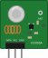
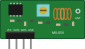

Transmissor MX-FS-03V (FS1000A) e receptor MX-05V. Oito SVGs, quatro vistas cada.
Fundo claro como a tela do Fritzing; só o PCB vai no escuro, porque a serigrafia é branca.
Transmissor — FS1000A, placa de 19 × 19 mm, furos DATA · VCC · GND

breadboard0,748 × 0,748 pol · 4×schematic1,10 × 1,00 pol · 2,5×

pcb0,748 × 0,748 pol · 2,5×icon0,32 × 0,32 pol · 4×
Receptor — MX-05V, placa de 30 × 14 mm, furos VCC · DATA · DATA · GND

breadboard1,181 × 0,551 pol · 4×schematic1,10 × 1,10 pol · 2,5×